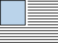
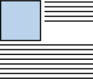
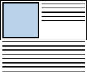
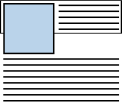

CSS
Contents
- CSS first steps
- CSS building blocks
- Cascade and inheritance
- Type, class, and ID selectors
- Attribute selectors
- Pseudo-classes and pseudo-elements
- Combinators
- The box model
- Backgrounds and borders
- Handling different text directions
- Overflowing content
- CSS values and units
- Sizing items in CSS
- Images, media, and form elements
- Styling tables
- Styling text
- CSS layout
CSS first steps
Getting started with CSS
-
What is the following called, and what are its various parts called?
h1 { color: red; font-size: 5em; }
How CSS is structured
-
What are the three ways of applying CSS to HTML, from best to worst?
-
What are cascade and specificity?
-
Are CSS properties and values case-sensitive?
-
What happens if the browser encounters CSS it doesn't understand?
-
Which country's spelling standard does CSS use?
-
How would you use an @rule to import a stylesheet into another CSS stylesheet?
-
What happens when you omit values in CSS shorthand?
-
How do you make comments in CSS?
How CSS works
-
How does a browser basically load a page, in steps?
-
What is the DOM?
CSS building blocks
Cascade and inheritance
-
What is inheritance?
-
What property values control inheritance?
-
What factors contribute to which rule will be applied in the case of conflict, in order of increasing importance?
-
What things don't impact specificity?
-
What system can be used to determine specificity?
-
What is importance? When should you use it?
-
How are conflicting declarations applied across different stylesheets?
Type, class, and ID selectors
-
Write the selector that targets all
<span></span>elements. -
Write the selector that targets every single thing in the document.
-
How can you use a universal selector to make a selector easier to read?
-
Write the selector that targets all elements with a
classofcereal. -
Write the selector that targets all
<span></span>s with aclassofcereal. -
Write the selector that targets all elements with a
classofcerealand aclassofmilk. -
Write the selector that targets all elements with an
idofshoop.
Attribute selectors
-
Write the selector that targets all
<a></a>s with atitleattribute. -
Write the selector that targets all
<a></a>s with ahrefattribute with a value of exactlyhttp://example.com. -
Write the selector that targets all
<p></p>s with aclassattribute, of whichspecialis either its exact value or one of its values (in a space-separated list). -
Write the selector that targets all
<div></div>s with aclassattribute, whose value is either exactlyzhor begins withzh-. -
Write the selector that targets all
<li></li>s with aclassattribute whose value begins withbox-. -
Write the selector that targets all
<li></li>s with aclassattribute whose value ends with-box. -
Write the selector that targets all
<li></li>s with aclassattribute whose value containsboxanywhere in the string. -
How do you tell the browser to match an attribute value case-insensitively?
Pseudo-classes and pseudo-elements
-
How are pseudo-classes denoted?
-
Write the selector that targets every
<p></p>that is the first element in an<article></article>. -
Write the selector that targets every
<p></p>that is the last element in an<article></article>. -
Write the selector that targets every
<p></p>that is the only element in an<article></article>. -
Write the selector that targets every
<input>that fails to validate. -
Write the selector that targets every
<a></a>that is being hovered over. -
Write the selector that targets every
<a></a>that is being focused using keyboard controls. -
How are pseudo-elements denoted?
-
Write the selector that targets the first line of every
<p></p>in an<article></article>. -
Write the rule that puts the string --> before every element with a
classofbox. -
Write the rule that puts the string --> after every element with a
classofbox.
Combinators
-
Write the selector that targets every
<p></p>inside an<article></article>inside a<section></section>. What kind of combinator is this? -
Write the selector that targets every
<p></p>that is a direct child of an<article></article>. What kind of combinator is this? -
Write the selector that targets every
<img>that comes right after a<p></p>at the same hierarchy level. What kind of combinator is this? -
Write the selector that targets every
<img>that comes anywhere after a<p></p>at the same hierarchy level. What kind of combinator is this?
The box model
-
Do inline boxes respect
widthandheightattributes? -
Do padding, margins, and borders on inline boxes push away other inline boxes?
-
What is the difference between inner and outer display types?
-
What are the parts of a CSS box, from inside to outside?
-
What is the difference between the standard box model and the alternative box model?
-
How do you make all elements follow the alternative box model?
-
If one element with a
margin-topof 30px is right below another element with amargin-bottomof 50px, what will be the margin between the two elements? What is this called? -
What is, say,
border-leftshorthand for? -
What is
display: inline-blockfor?
Backgrounds and borders
-
Write the declaration that creates a background image with
balloons.png.-
What would you add so it doesn't repeat?
-
So it only repeats horizontally?
-
So it only repeats vertically?
-
So it repeats in both directions?
-
What would you add so it completely covers the box area while maintaining its aspect ratio?
-
So it fits inside the box while maintaining its aspect ratio?
-
-
What property is used to position a background image?
-
How does the coordinate system work with this?
-
What keywords does this take?
-
What happens when you mix a keyword with a length/percentage?
-
-
Write the declaration that fixes an element's background to the page (scrolls when the page is scrolled, stays fixed when the element's content is scrolled).
-
Write the declaration that fixes an element's background to the viewport (stays fixed whether the page or the element's content is scrolled; always remains in the same position on the screen).
-
Write the declaration that fixes an element's background to the element itself (scrolls whether the page or the element's content is scrolled, unless the element doesn't scroll on the page, like if it has
position: fixed) -
What is the rule with specifying
background-colorusing thebackgroundshorthand property? -
What is the rule with specifying
background-sizeusing thebackgroundshorthand property? -
How do you round the corners of a border?
Handling different text directions
-
What property is used to switch the writing mode of the document?
-
What are the possible values for this property?
-
-
What is the logical, flow-relative equivalent to the
widthattribute? -
What is the logical, flow-relative equivalent to the
heightattribute? -
What are the logical, flow-relative equivalents to the
margin/padding/border-top,-right,-bottom, and-leftproperties?
Overflowing content
-
What is overflow?
-
What property allows you to control how an element overflows?
-
What is the default value for this property? Why?
-
-
How do you make overflow visible?
-
How do you make overflow invisible?
-
How do you put scrollbars on overflowing content? What is the caveat to this?
-
How do you put scrollbars on overflowing content in only one direction?
-
How do you set two different values for
overflow, one for each direction? -
How do you make it so scrollbars only appear when the content overflows?
-
What is a Block Formatting Context? What values of
overflowcreate one?
CSS values and units
-
What is another name for CSS values?
-
What is a <number>?
-
What is a <dimension>? What values does this include?
-
What values does the
opacityproperty take? -
What is the difference between RGB and RGBA?
-
What is HSL?
Sizing items in CSS
-
What is an element's intrinsic size?
-
What is an
<img>'s intrinsic size? -
What is a
<div></div>'s intrinsic size? -
What is an element's extrinsic size?
-
In what dimension does setting the size of an element risk overflow?
-
From what is the value of margins and padding when set in percentages calculated?
-
What can you do when you know a box will contain a variable amount of content and you want it to always be at least a certain height?
-
What can you do when you want an image to scale down when there's not enough space to display them at their intrinsic width, while making sure they don't become larger than that width?
-
What is
1vwequal to? -
What is
1vhequal to?
Images, media, and form elements
-
What are replaced elements?
-
How would you make it so a replaced element completely covers the box area while maintaining its aspect ratio?
-
How would you make it so a replaced element fits inside the box while maintaining its aspect ratio?
-
Do replaced elements stretch when put into flex or grid layouts?
-
Write a basic form reset with comments explaining the purpose of each part.
Styling tables
-
What is something that you should set on tables so you can size columns manually? Why is this necessary?
-
What should you set on tables so table cells share borders?
-
How do you make it so letters are spaced apart?
-
What are zebra stripes? How do you set them?
-
How do you make it so text is centered in a table cell?
Styling text
Fundamental text and font styling
-
What property is used to set the font?
-
What are the web safe fonts and their respective caveats/things to remember about them?
-
What is the general format of a font stack?
-
What property is used to set the font size?
-
Is font size inherited?
-
What is the default font size of
<html></html>? -
How do you set how bold the text is? What two values for this are you most likely to use?
-
What property can be used to make text all capitals? What values does this take?
-
What property can be used to put an underline on text? What values does this take?
-
How do you give text a drop shadow?
-
How do you align text?
-
How do you set line height?
-
How do you make it so words are spaced apart?
Styling lists
-
How do you set the type of bullets to use for a list?
-
How do you set whether the bullets appear inside the list items or outside them before the start of each item?
-
How do you set a custom image for the bullets?
-
What is the shorthand for these properties?
-
How do you make an ordered list start on a number other than one?
-
How do you make an ordered list count backwards?
-
How do you give specific numerical values to ordered list items?
Styling links
-
How do you target an unvisited link?
-
How do you target a visited link?
-
How do you target a link being hovered over?
-
How do you target a link being focused with keyboard controls or something else?
-
How do you target a link being clicked on?
-
In what order should you put link rules?
CSS layout
Flexbox
-
What is flexbox?
-
How do you select which items are to be laid out as flexible boxes?
-
What if you wanted to lay out inline items as flexible boxes?
-
-
What is the difference between the main axis and the cross axis?
-
How do you set the direction in which flex items are laid out?
-
How do you make it so the flex items wrap when reaching the end of the main axis?
-
How do you make it so the flex items are each 200px wide?
-
How can you use this same property to instead set unitless proportion values on individual flex items to determine the space they take up?
-
How can you set a minimum width to be applied on a flex item before the unitless proportion value is applied?
-
-
What is the shorthand for the two properties from Questions 4 and 6?
-
How do you control where the flex items sit on the cross axis?
-
How do you control where the flex items sit on the main axis?
-
How do you change the layout order of individual flex items?
-
Can you nest flex items (make a flex item a flex container)?
Grids
-
What is CSS Grid Layout?
-
What do you call the gaps between rows and columns?
-
How do you select which items are to be laid out in a grid? What is the immediate effect of doing this?
-
How would you arrange a grid into three 200px columns?
-
How would you arrange a grid into three columns, one of which takes up twice as much of the available space as the other two?
-
How would you make the gutters of a grid 20px wide?
-
How would you make the gutters between columns 20px wide and the gutters between rows 15px wide?
-
Using a function, how would you arrange a grid into three columns, each taking up the same amount of available space?
-
What is the difference between the explicit grid and the implicit grid? What are they analogous to in flexbox?
-
How are implicit row and column tracks sized by default? How can you size them?
-
How can you prevent overflow with implicit grid tracks that you sized?
-
How can you make a grid create as many columns of some minimum size as will fit in the container?
-
Write the CSS that places items in a grid so that:
- The
<header></header>sits on the first row and spans columns 1 through 3 - The
<article></article>sits on the second row and the second column - The
<aside></aside>sits on the second row and the first column - The
<footer></footer>sits on the third row and spans columns 1 through 3
-
What about for area-based placement?
-
How do you specify an empty cell using area-based placement?
-
How would you make the
<article></article>three times as wide as the<aside></aside>using a line-based 12-column grid framework?
- The
Floats
-
If you have a box followed by text in the source code, How would you make it so the box floats to the left while the text wraps around it, like so:
-
What other values does this property take?
-
-
How would you make it so some of the text moves down away from the box, like so:
-
What other values does this property take?
-
-
How would you make it so that, if you had a wrapper around the floated box and that first paragraph (first five lines), the rest of the text cleared the box so that the bottom of the wrapper box wraps the floating item and the wrapping content even if the content is shorter? For a visual aid:
You want this:
Not this:
Describe three ways to accomplish this, and say which one is the preferred method.
Positioning
-
What is static positioning? How do you set it?
-
What is relative positioning? How do you set it?
-
How would you position an element to be 30px down and 20px to the right of its default, static position?
-
-
What is absolute positioning? How do you set it?
-
How would you position an element to be 30px down and 20px to the right of the top-left corner of its containing block?
-
How do you identify the containing element of an absolutely positioned element?
-
What is the positioning context?
-
If you absolutely position an element, is the space that the element filled when it was in normal flow preserved?
-
Does margin collapsing affect absolutely positioned elements?
-
-
In the case of overlapping, in what order are elements stacked by default?
-
How do you change the order that overlapping elements are stacked?
-
What is fixed positioning? How do you set it?
-
How do you make it so an element acts like it is relatively positioned until it is 10px from the top of the viewport, at which point it remains fixed at that position while scrolling?
Multiple-column layout
-
How do you switch on multicol?
-
How do you set the size of the gaps between columns?
-
How do you put a rule in between columns?
-
How do you increase the space on either side of a rule?
-
How do you make an element span across all of the columns? Some of the columns?
-
How do you make it so an element doesn't fragment across columns?
Beginner's guide to media queries
-
What is the basic media query syntax?
-
What are the possible media types?
-
Write the media query that makes the body text blue if the screen's width is less than or equal to 600px.
-
Write the media query that makes the body text red if the screen's width is at least 600px.
-
Write the media query that makes the body text rebeccapurple if the screen is in landscape mode. What other values does this media feature take?
-
Write the media query that makes the body text rebeccapurple if the user has the ability to hover over elements.
-
Write the media query which tests that a user is using a mouse or a trackpad. What other values does this media feature take?
-
Write the media query which tests that the screen is both at least 600px wide and in landscape mode.
-
Write the media query which tests that the screen is at least 600px wide or in landscape mode.
-
Write the media query which tests that the screen is not in landscape mode.
-
What do you call the point at which a media query is introduced?